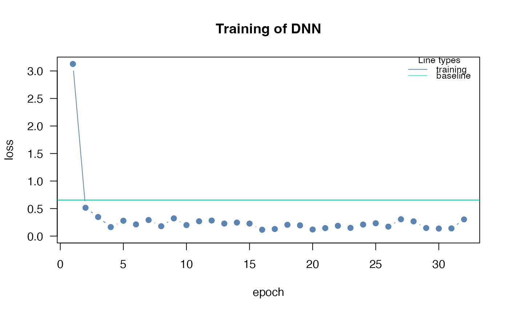
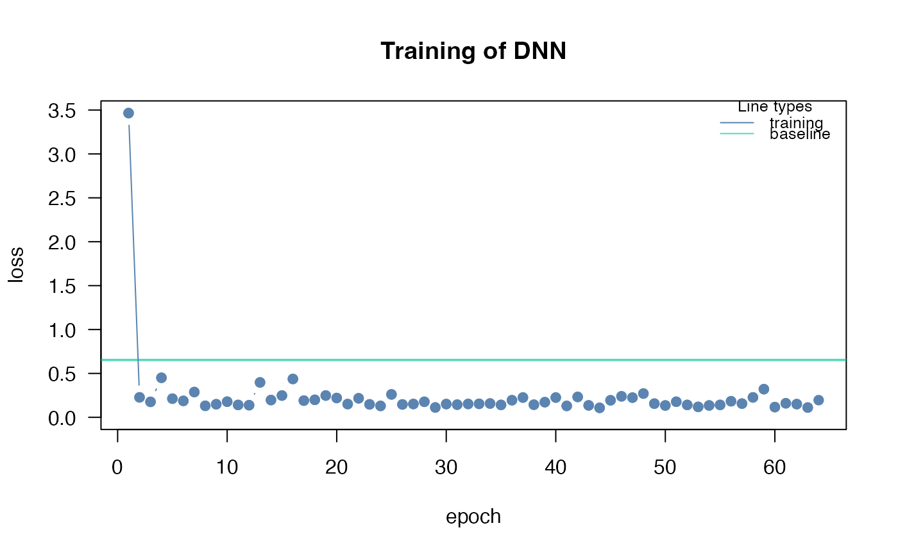

Continues training of a model generated with dnn or cnn for additional epochs.
Source: R/continue_training.R
continue_training.RdIf the training/validation loss is still decreasing at the end of the training, it is often a sign that the NN has not yet converged. You can use this function to continue training instead of re-training the entire model.
Usage
continue_training(model, ...)
# S3 method for class 'citodnn'
continue_training(
model,
epochs = 32,
data = NULL,
device = NULL,
verbose = TRUE,
changed_params = NULL,
init_optimizer = TRUE,
...
)
# S3 method for class 'citodnnBootstrap'
continue_training(
model,
epochs = 32,
data = NULL,
device = NULL,
verbose = TRUE,
changed_params = NULL,
parallel = FALSE,
init_optimizer = TRUE,
...
)
# S3 method for class 'citocnn'
continue_training(
model,
epochs = 32,
X = NULL,
Y = NULL,
device = NULL,
verbose = TRUE,
changed_params = NULL,
init_optimizer = TRUE,
...
)Arguments
- model
- ...
class-specific arguments
- epochs
additional epochs the training should continue for
- data
matrix or data.frame. If not provided data from original training will be used
- device
can be used to overwrite device used in previous training
- verbose
print training and validation loss of epochs
- changed_params
list of arguments to change compared to original training setup, see
dnnwhich parameter can be changed- init_optimizer
re-initialize optimizer or not
- parallel
train bootstrapped model in parallel
- X
array. If not provided X from original training will be used
- Y
vector, factor, numerical matrix or logical matrix. If not provided Y from original training will be used
Examples
# \donttest{
if(torch::torch_is_installed()){
library(cito)
set.seed(222)
validation_set<- sample(c(1:nrow(datasets::iris)),25)
# Build and train Network
nn.fit<- dnn(Sepal.Length~., data = datasets::iris[-validation_set,], epochs = 32)
# continue training for another 32 epochs
nn.fit<- continue_training(nn.fit,epochs = 32)
# Use model on validation set
predictions <- predict(nn.fit, iris[validation_set,])
}
#> Loss at epoch 1: 2.930790, lr: 0.01000

#> Loss at epoch 2: 0.473531, lr: 0.01000
#> Loss at epoch 3: 0.228288, lr: 0.01000
#> Loss at epoch 4: 0.330207, lr: 0.01000
#> Loss at epoch 5: 0.449747, lr: 0.01000
#> Loss at epoch 6: 0.716396, lr: 0.01000
#> Loss at epoch 7: 0.324201, lr: 0.01000
#> Loss at epoch 8: 0.271574, lr: 0.01000
#> Loss at epoch 9: 0.185301, lr: 0.01000
#> Loss at epoch 10: 0.141940, lr: 0.01000
#> Loss at epoch 11: 0.348313, lr: 0.01000
#> Loss at epoch 12: 0.338353, lr: 0.01000
#> Loss at epoch 13: 0.146546, lr: 0.01000
#> Loss at epoch 14: 0.203589, lr: 0.01000
#> Loss at epoch 15: 0.142328, lr: 0.01000
#> Loss at epoch 16: 0.136478, lr: 0.01000
#> Loss at epoch 17: 0.129571, lr: 0.01000
#> Loss at epoch 18: 0.134471, lr: 0.01000
#> Loss at epoch 19: 0.154539, lr: 0.01000
#> Loss at epoch 20: 0.185483, lr: 0.01000
#> Loss at epoch 21: 0.179047, lr: 0.01000
#> Loss at epoch 22: 0.153527, lr: 0.01000
#> Loss at epoch 23: 0.158886, lr: 0.01000
#> Loss at epoch 24: 0.195365, lr: 0.01000
#> Loss at epoch 25: 0.137596, lr: 0.01000
#> Loss at epoch 26: 0.272937, lr: 0.01000
#> Loss at epoch 27: 0.141869, lr: 0.01000
#> Loss at epoch 28: 0.131583, lr: 0.01000
#> Loss at epoch 29: 0.157474, lr: 0.01000
#> Loss at epoch 30: 0.136838, lr: 0.01000
#> Loss at epoch 31: 0.131639, lr: 0.01000
#> Loss at epoch 32: 0.147097, lr: 0.01000
#> Loss at epoch 33: 0.121109, lr: 0.01000

#> Loss at epoch 34: 0.159519, lr: 0.01000
#> Loss at epoch 35: 0.146501, lr: 0.01000
#> Loss at epoch 36: 0.209492, lr: 0.01000
#> Loss at epoch 37: 0.375915, lr: 0.01000
#> Loss at epoch 38: 0.194022, lr: 0.01000
#> Loss at epoch 39: 0.157618, lr: 0.01000
#> Loss at epoch 40: 0.106644, lr: 0.01000
#> Loss at epoch 41: 0.169825, lr: 0.01000
#> Loss at epoch 42: 0.133711, lr: 0.01000
#> Loss at epoch 43: 0.130583, lr: 0.01000
#> Loss at epoch 44: 0.163133, lr: 0.01000
#> Loss at epoch 45: 0.164691, lr: 0.01000
#> Loss at epoch 46: 0.119268, lr: 0.01000
#> Loss at epoch 47: 0.288759, lr: 0.01000
#> Loss at epoch 48: 0.192757, lr: 0.01000
#> Loss at epoch 49: 0.256921, lr: 0.01000
#> Loss at epoch 50: 0.123854, lr: 0.01000
#> Loss at epoch 51: 0.112846, lr: 0.01000
#> Loss at epoch 52: 0.109970, lr: 0.01000
#> Loss at epoch 53: 0.112007, lr: 0.01000
#> Loss at epoch 54: 0.136101, lr: 0.01000
#> Loss at epoch 55: 0.291474, lr: 0.01000
#> Loss at epoch 56: 0.146449, lr: 0.01000
#> Loss at epoch 57: 0.133791, lr: 0.01000
#> Loss at epoch 58: 0.121188, lr: 0.01000
#> Loss at epoch 59: 0.122533, lr: 0.01000
#> Loss at epoch 60: 0.109739, lr: 0.01000
#> Loss at epoch 61: 0.143954, lr: 0.01000
#> Loss at epoch 62: 0.165923, lr: 0.01000
#> Loss at epoch 63: 0.127125, lr: 0.01000
#> Loss at epoch 64: 0.111499, lr: 0.01000
# }